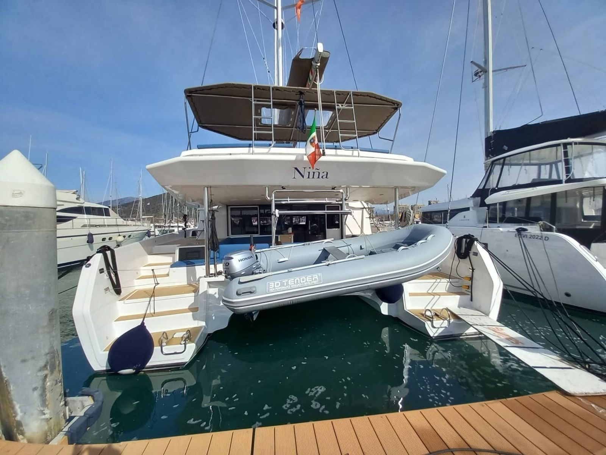
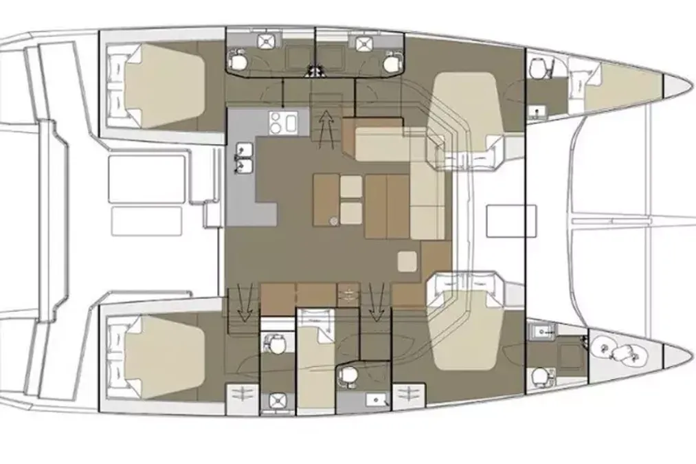

Niña
La barca
Niña è un Dufour 48 Catamaran del 2022, il primo catamarano firmato dal cantiere Dufour su disegno di Umberto Felci. Quasi quindici metri per otto di baglio, sei cabine e sei bagni, pensata per la crociera lunga in comodità: flybridge con seconda postazione di guida, grandi prendisole di prua e un pozzetto in teak che è un salotto sull'acqua. Dotazioni da casa galleggiante — dissalatore, aria condizionata, generatore e Starlink — per stare in rada giorni senza rientrare in porto. Base a Marina di Cannigione.
Dotazioni
Velocità
Specifiche tecniche
| Modello | Dufour 48 Catamaran |
| Progetto | Felci Yachts Design |
| Anno | 2022 |
| Lunghezza fuori tutto | 14,70 m |
| Baglio (larghezza) | 8,00 m |
| Pescaggio | 1,35 m |
| Dislocamento | ~14.955 kg |
| Motori | 2 × 50 cv |
| Randa | 76 m² |
| Superficie velica | 124 m² |
| Serbatoio gasolio | 900 L |
| Serbatoio acqua | 700 L |
| Cabine · bagni | 6 · 6 |
| Posti letto | fino a 10–11 |
Dati dall'annuncio della barca e dalle schede tecniche del modello. Altezza dell'albero e velocità ai vari regimi: da confermare a bordo.
Pregi e difetti
▲ Pregi
- Spazi e comfort da casa galleggiante: 6 cabine, flybridge, pozzetto in teak.
- Autonomia in rada: dissalatore, aria condizionata, generatore, Starlink.
- Vela facile, stabile e sicura — ideale per gruppo/famiglia.
- Ottima piattaforma per bagni, tuffi e vita all'aperto.
▼ Difetti
- È pesante (~15 t): con meno di 10 kn di vento è pigra, meglio il motore.
- È grande (8 m di baglio): manovre attente nei porti stretti.
- Barca importante: consumi, ormeggi e gestione da 48 piedi.
Galleria
In video
La barca in navigazione.
La prova in mare del Giornale della Vela ↗: spazi e prestazioni del Dufour 48 Catamaran.
Cabine e planimetria

- 3× cabina doppia — bagno privato
- 1× cabina doppia — bagno condiviso
- 1× cabina con letto a castello — bagno condiviso
- 1× cabina del marinaio — bagno privato
Planimetria ufficiale del Dufour 48 Catamaran, configurazione 6 cabine / 6 bagni.
Dalle riviste
«Il primo catamarano di Umberto Felci, in rotta verso la dolce vita.»
Multihulls World ↗Un livello di comfort e lusso «senza pari nella categoria», con un equilibrio riuscito tra prestazioni, design e vivibilità.
Ionian Catamarans ↗Dufour conferma la sua reputazione di «pensiero innovativo e comfort eccezionale»: tutto ruota attorno alla vita all'aperto e a un flybridge enorme.
boats.com ↗Provata in mare anche da Giornale della Vela ↗ e Yachting Monthly ↗.